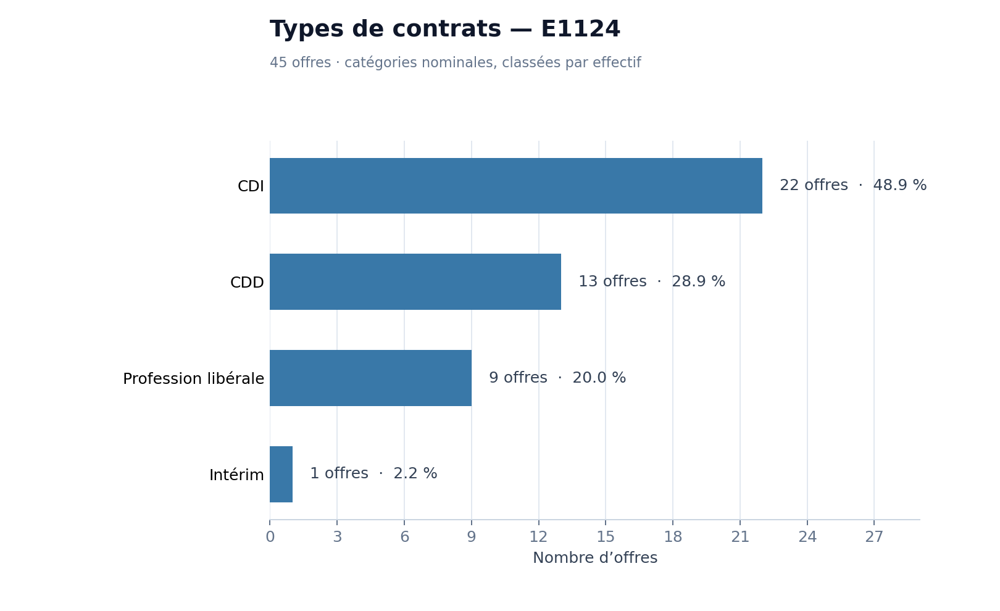
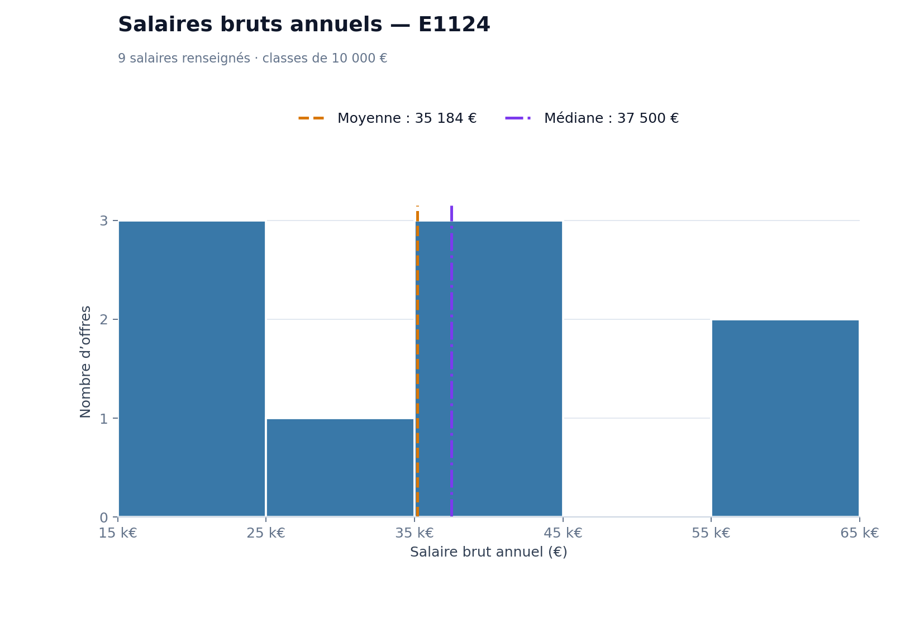

Observatoire métier
Étude des offres d’emploi · ROME E1124
Observatoire · ROME E1124
Observatoire métier : Social Media Manager (ROME E1124)
Analyse statistique d’un corpus de 45 offres d’emploi réelles issues de France Travail, à partir des données de l’Observatoire.
Données France Travail · 28 septembre 2026Explorer l’analyse
Choisissez un onglet pour consulter la répartition des contrats, les salaires ou les prochaines analyses.
Les contrats
Répartition des 45 offres selon le type de contrat annoncé.

Dispersion des salaires
Salaires bruts annuels communiqués dans les offres E1124.


Plus d’offres d’emploi
Section en cours de construction - Analyse statistique à venir
Qui sommes-nous ?
Section en cours de construction - Analyse statistique à venir